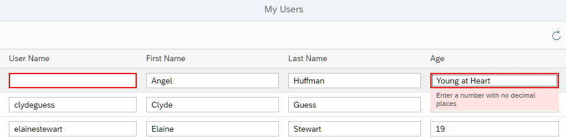

The OData V4 Model utilizes this information to compute the corresponding OpenUI5 type, including
constraints, and sets this type to the OpenUI5 property binding for
the entity property. For example, for <Input value={Age}/> the
OpenUI5 type
Int64 is used, which corresponds to the OData type
Edm.Int64.

You can view and download all files at OData V4 - Step 3.
{
"_version": "1.12.0",
"sap.app": {...
},
"sap.ui": {
"technology": "UI5",
"deviceTypes": {
}
},
"sap.ui5": {
"rootView": {
...
},
"dependencies": {
...
}
},
"contentDensities": {
...
},
"handleValidation": true,
"models": {
...
}
},
...
}
In the manifest.json descriptor file, we add the
"handleValidation": true setting. This makes sure that any
validation errors that are detected by the OpenUI5 types are shown
on the UI using the message manager.
We now run the app using the index.html file and enter values
that don't match the type and constraints given in the metadata file. For example,
enter the string value Young at Heart in field
Age, which requires an integer input (OpenUI5 type
sap.ui.model.odata.type.Int64, corresponding to OData type
Edm.Int64), or remove an entry from the User
Name or First Name fields, which are
mandatory. Fields with incorrect entries are highlighted and an error message is displayed.
If you explicitly define a type in the binding info of a control, the automatic type detection for that binding will be turned off. For
example, if you change the Input for Age in the view to <Input value="{path:
'Age', type: 'StringType'}" />, the String type will be used, not the Int64
type from the service metadata. Note that StringType has to be required from
sap/ui/model/odata/type/String as shown in Binding Syntax.
<EntityType Name="Person">
<Key>
<PropertyRef Name="UserName" />
</Key>
<Property Name="UserName" Type="Edm.String" Nullable="false" />
<Property Name="FirstName" Type="Edm.String" />
<Property Name="LastName" Type="Edm.String" />
<Property Name="MiddleName" Type="Edm.String" />
<Property Name="Gender" Type="Microsoft.OData.Service.Sample.TrippinInMemory.Models.PersonGender"
Nullable="false" />
<Property Name="Age" Type="Edm.Int64" />
To make the User Name optional, we remove the parameter Nullable="false" from the
UserName property. You can play around with the settings for the other properties, for example, change the type
of property Age to Type="Edm.String" to allow free text.
To see the metadata of an OData service, you append the
$metadata variable to the URL of the service. You can try
this, for example, with http://services.odata.org/TripPinRESTierService/
and http://services.odata.org/TripPinRESTierService/$metadata